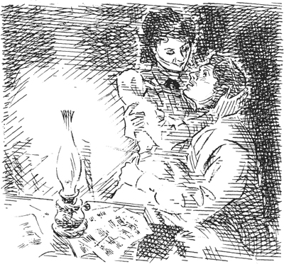
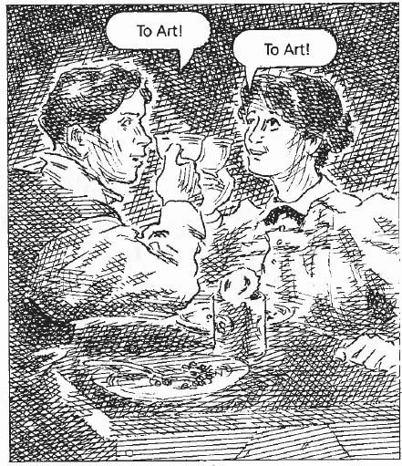
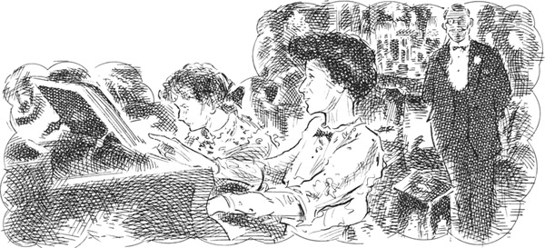
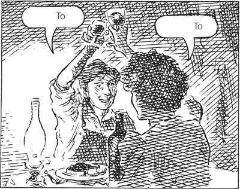
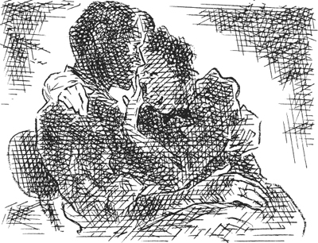

Joe và Delia là sinh viên. Họ đều yêu nghệ thuật. Họ sống vì nghệ thuật!
Joe luôn thích vẽ tranh. Năm hai mươi tuổi, anh đã rời bỏ gia đình ở Kansas và đến thành phố New York. Anh có rất ít tiền, nhưng rất có tham vọng.
Anh luôn nói: 'Một ngày nào đó, tôi sẽ trở thành họa sĩ nổi tiếng.'
Delia luôn thích chơi đàn piano. Cô đã rời bỏ gia đình ở Missouri và cùng đến New York. Gia đình cô đã cho cô một số tiền. Cô cũng rất có tham vọng.
Cô luôn nói: 'Một ngày nào đó, tôi sẽ trở thành nghệ sĩ piano nổi tiếng. Tôi sẽ chơi đàn piano tại các buổi hòa nhạc.'
Tại New York, Joe và Delia đã gặp gỡ những sinh viên nghệ thuật và sinh viên âm nhạc khác. Và chẳng bao lâu sau, Joe và Delia đã gặp nhau. Họ đã yêu nhau và kết hôn.
Sau khi kết hôn, Joe và Delia sống trong một căn hộ cho thuê. Đó là một căn hộ nhỏ, giá rẻ ở Lower Manhattan. Họ đều làm việc chăm chỉ mỗi ngày. Joe học vẽ tranh với họa sĩ nổi tiếng, ông Magister. Delia học piano với nghệ sĩ dương cầm nổi tiếng, ông Rosenstock.
Joe và Delia rất nghèo, nhưng họ rất hạnh phúc. Một số người sẽ làm bất cứ điều gì vì nghệ thuật! Joe và Delia có nghệ thuật và có nhau. Cuộc sống thật tuyệt vời!
Mỗi sáng, Joe và Delia ăn sáng cùng nhau. Sau đó, họ vui vẻ đến lớp học. Mỗi tối, họ ăn tối tại căn hộ của mình và nói về những dự định của mình.

Joe nói: 'Chẳng mấy chốc, mọi người sẽ mua tranh của tôi.'
Delia nói: 'Chẳng mấy chốc, mọi người sẽ đến xem buổi biểu diễn của tôi.'
Nhưng sau một vài tháng, nghệ thuật là không đủ. Joe và Delia rất nghèo. Học phí của ông Magister và ông Rosenstock rất đắt.
Một buổi tối, Delia đã nói với chồng: 'Anh yêu Joe, em sẽ không học thêm piano nữa. Em sẽ dạy nhạc. Nghệ sĩ cũng phải ăn mà!'
_____
Ba buổi tối sau, Delia trở về nhà với nụ cười trên môi.
Cô nói: 'Anh yêu Joe, em sẽ dạy một học sinh nhạc! Tên cô ấy là Clementina. Cô ấy mười tám tuổi và sống trên Phố Seventy-first. Cha cô ấy là Thiếu tướng A.B. Pinkney.'
Delia nói: 'Clementina rất dễ thương. Nhưng sức khỏe cô ấy không được tốt lắm. Thiếu tướng muốn em dạy cô ấy ba buổi một tuần. Và ông ấy sẽ trả cho em năm đô la một buổi! Vâng! Chẳng mấy chốc, em sẽ quay lại với ông Rosenstock.'
Delia nhìn vào khuôn mặt của chồng. Joe không vui khi nghe tin này.
Cô nói: 'Làm ơn đừng giận em, Joe. Chúng ta hãy ăn tối vui vẻ nào.'
Joe mở một lon đậu.
Anh nói buồn bã: 'Em sẽ dạy một học sinh, vậy còn anh, anh sẽ không đến học với ông Magister nữa, Delia. Anh sẽ bán báo và kiếm được một ít đô la.'
Delia vòng tay ôm cổ chồng.
Cô nói: 'Anh yêu Joe, anh đừng ngốc thế. Anh không được bỏ ông Magister. Chúng ta có thể sống rất tốt với mười lăm đô la một tuần.'
Joe đổ đậu ra đĩa.
Anh nói với vợ: 'Được rồi. Em là một cô gái tốt. Nhưng anh không thích điều này. Dạy học không phải là nghệ thuật!'
Delia trả lời: 'Em sẽ dạy vì tình yêu dành cho nghệ thuật! Chúng ta sẽ làm bất cứ điều gì vì tình yêu dành cho nghệ thuật!'
Sau một hồi, Joe lên tiếng.
Anh nói: 'Ông Magister thích bầu trời trong bức tranh Công viên Trung tâm của anh. Và ông ấy đã giới thiệu hai bức tranh của anh cho một người bán tranh, ông Tinkle. Ông Tinkle sẽ đặt tranh của anh ở cửa sổ hàng của ông ấy. Chẳng bao lâu, ai đó sẽ mua một bức tranh của anh.'
Delia nói ngọt ngào: 'Vâng, ai đó sẽ mua một bức tranh. Cảm ơn ông tướng Pinkney, và cũng cảm ơn ông Tinkle. Chúng ta sẽ sống vì nghệ thuật. Và bây giờ, chúng ta hãy ăn hết những quả đậu ngon này và uống một tách trà nào.'

_____
Tuần tiếp theo, ngày nào Joe cũng vẽ tranh ở Công viên Trung tâm. Ngày nào, anh và Delia cũng ăn sáng sớm. Sau đó, Delia hôn anh và tạm biệt anh. Anh rời khỏi căn hộ lúc bảy giờ sáng. Anh không trở về cho đến bảy giờ tối. Một số người sẽ làm bất cứ điều gì vì tình yêu nghệ thuật!
Vào tối thứ Bảy, Joe về nhà trước. Delia về nhà ngay sau đó. Cô đặt mười lăm đô la trên bàn ăn trong căn hộ nhỏ. Cô mệt nhưng lại rất tự hào.
Cô nói với Joe: 'Clementina học không chăm chỉ lắm. Trong mỗi buổi học, em phải nói đi nói lại những điều giống nhau. Nhưng cô ấy rất dễ thương. Và Thiếu tướng Pinkney là một ông già đáng kính! Thỉnh thoảng, ông ấy vào phòng nhạc và lắng nghe chúng em chơi.'

Sau đó, Joe lấy mười tám đô la ra khỏi túi. Anh đặt số tiền đó cạnh số tiền của Delia trên bàn.
Anh nói: 'Anh đã bán một bức tranh cho một người đàn ông từ Peoria.'
Delia nói: 'Anh đã bán một bức tranh hả? Cho một người đàn ông từ Peoria, Illinois ư? Tuyệt quá, Joe!'
Joe trả lời: 'Đúng vậy, Delia. Một người đàn ông béo từ Peoria, Illinois đã mua một bức tranh. Ông ấy thấy bức tranh trong cửa sổ hàng của ông Tinkle và đã mua nó. Giờ thì ông ấy muốn mua thêm một bức tranh khác của anh nữa. Sắp tới, em sẽ không còn phải dạy nhạc nữa. Chúng ta lại cùng sống vì nghệ thuật.'
Delia nói: 'Ồ, Joe, một ngày nào đó anh sẽ nổi tiếng. Và tối nay chúng ta có ba mươi ba đô la! Chúng ta sẽ ăn gì vào bữa tối đây? Em sẽ ra ngoài mua đồ.'
Joe nói: 'Chúng ta sẽ ăn thịt bò ngon nhất. Và một chai rượu vang.'

Vào tối thứ Bảy tuần sau, Joe lại về nhà trước. Anh rất mệt. Tay anh đầy bẩn và đen. Anh nhanh chóng rửa tay. Sau đó, anh đặt mười tám đô la lên bàn.
Một lúc sau, Delia đến căn hộ. Tay phải cô được băng bó.
Joe hỏi: 'Chuyện gì vậy Delia? Em bị thương ở tay à?'
Delia cố gắng cười.
Cô nói: 'Clementina hôm nay không khỏe. Cô ấy làm đổ trà nóng vào tay em. Cô bé tội nghiệp đã rất lấy làm tiếc! Và Thiếu tướng Pinkney đã bảo một người giúp việc đến hiệu thuốc mua băng về cho em. Lúc đầu, tay em rất đau, Joe. Nhưng giờ thì không còn đau nhiều nữa.'
Joe nhẹ nhàng nắm tay cô.
Anh hỏi: 'Đây là cái gì?' Anh nhìn vào một mảnh vải trắng bên dưới băng.
Delia nói: 'Đây là một mảnh vải mềm có tẩm dầu.'
Sau đó, cô nhìn thấy số tiền mười tám đô la trên bàn.
Cô hỏi: 'Ôi, Joe, anh đã bán được một bức tranh nữa sao?'
Joe trả lời: 'Phải! Người đàn ông béo từ Peoria đã mua bức tranh thứ hai của anh hôm nay! Và ông ấy muốn mua thêm hai bức nữa. Nhưng khi nào em bị bỏng ở tay vậy, Delia?'
Delia trả lời: 'Vào năm giờ chiều nay. Cái bàn là - không, chỗ pha trà -'
Joe nói: 'Ngồi xuống, Delia.' Anh vòng tay qua vai vợ. Anh hỏi: 'Em đã làm gì trong hai tuần qua?'
Trong một hoặc hai phút, Delia kể cho Joe nghe về Thiếu tướng Pinkney và Clementina. Nhưng sau đó, cô bắt đầu khóc.
Cô nói: 'Ôi, Joe. Không có Thiếu tướng Pinkney nào cả. Cũng không có Clementina nào cả. Em không xin được học sinh nào. Nhưng em không muốn anh phải ngừng học với ông Magister. Em đã xin một công việc ở tiệm giặt ủi lớn trên Phố Twenty-fourth. Em ủi áo sơ mi ở đó. Nhưng chiều nay, một trong những cô gái đã làm rơi bàn là nóng vào tay em.'
Cô ngước nhìn chồng. Cô nói: 'Đừng giận em. Hôn em đi, Joe. Anh thông minh quá! Làm sao anh đoán ra được về Thiếu tướng Pinkney vậy?'
Joe nói: 'Anh không đoán cho đến tận tối nay. Sau đó, anh thấy mảnh vải trên tay em, bên dưới băng. Anh thấy mảnh vải tẩm dầu. Anh đã gửi mảnh vải đó lên từ phòng lò hơi chiều nay. Anh gửi nó cho một trong những cô gái ở trên lầu. Anh đã làm việc ở phòng lò hơi của tiệm giặt ủi đó trong hai tuần. Anh cho than vào lò hơi.'
Delia hỏi: 'Anh không bán được bức tranh nào sao?'
Joe buồn bã trả lời: 'Không, Delia. Không có người đàn ông béo nào từ Peoria cả.'
Đột nhiên, cả hai người đều bật cười.
Joe nói: 'Ồ, Delia, hai tuần trước, em đã nói với anh, "Chúng ta sẽ làm bất cứ điều gì vì tình yêu nghệ thuật". Em còn nhớ không?'
Delia áp tay lên môi chồng.
Cô nói: 'Vâng, nhưng em đã nhầm, Joe. Chúng ta sẽ làm bất cứ điều gì vì tình yêu.'
